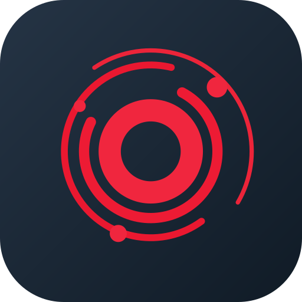

Gestão de SST para equipes de telecomunicações. Acesse seus registros, programas, inspeções e evidências com a conta autorizada.
Entre com uma conta autorizada para visualizar e atualizar os registros da equipe no Firebase.
Somente contas autorizadas podem acessar os dados do sistema.